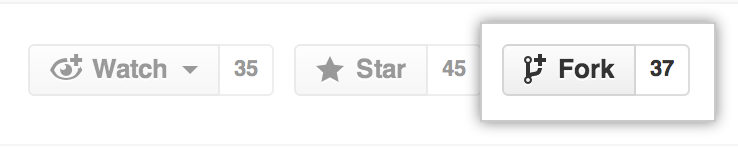

Guides
This project will not be published as a Julia Package as it is a interim project. Therefore you will have to clone it from GitHub instead of using the convenient Pkg.add("<Packagename>") command.
TODO: polish this and add a MagMechFEM_Matlab2Julia example instead of the NURBStoolbox one
How to download and try the project
This guide aims at first time Julia and Git users. And will lead to a one way copy of the project on your machine. This is a short guide on how to download the project and start experimenting with it.
I assume that you:
On your working directory download the current state of the git repository with:
git clone https://github.com/LazyScholar/MagMechFEM_Matlab2Julia.gitThis will create a local copy of this project in your working directory.
Change into the created subdirectory MagMechFEM_Matlab2Julia.
cd MagMechFEM_Matlab2JuliaNow start Julia with the command:
juliaThis will start the Julia REPL (assuming you set up Julia correctly). Now we will activate the current project by typing in:
using Pkg
Pkg.activate(".")
Pkg.instantiate()Which loads the module Pkg, activates the current path as project directory and installs all dependencies.
Now you should be able to load the project module with the command:
using MagMechFEM_Matlab2JuliaThis pre-compiles the package (btw. Julia has tab completion). Now you can use it.
Try to use one of the NURBStoolbox demos e.g.:
MagMechFEM_Matlab2Julia.NURBStoolbox.demoruled()You might have to explicitly install Pkg.add("PyPlot") or further packages as those might not be fully tracked or need a manual instal (Julia should tell you that in the error messages).
In order to build the documentation on your machine you can run.
include("docs/make.jl")To run the package tests use the command.
Pkg.test()If you have Jupyter installed you might want to convert one of the example files into a notebook by:
using Literate
Literate.notebook("docs/literate/ex_NURBStoolbox.jl",joinpath(pwd(),"docs/notebooks/"))This will create a Jupyter notebook in the directory docs/notebooks (keep in mind to install the Julia kernel for Jupyter).
To get updates of the repository (without deleting the directory and cloning again) add a remote with the shell command
git remote add origin https://github.com/LazyScholar/MagMechFEM_Matlab2Julia.gitfrom the cloned subdirectory MagMechFEM_Matlab2Julia. You can use git remote to check if you have remotes registered with your local copy. The name origin for the remote is arbitrary, and you can choose another name.
To get all changes onto your machine execute
git fetch --allwhich gets you all changes of the remote repository without changing your local copy yet.
Now you can update or change your local state to the newest one with
git pull, be aware that this might overwrite against local changes you have done.
How to contribute with Git
This is a short guide on how to contribute to the project and work with it. And aims at first time contributors and Git users (verterans should skim it and have a look at the TODO: contribution rules). I assume here that you
- know how to work with Julia,
- have read, understood and accept the
TODO: contribution rules, - have Git on your system,
- have a GitHub account,
- and are fairly confident in working with Linux and the command line.
How to contribute to a GitHub project in general
First you have to fork the project (this step is unnecessary for users that have commit access to the project). In order to do this you have to fork/copy the repository into your own account. To do this just click on the fork button on the main project page.

Now you can clone your copy of the project onto your machine. To do this you can click on the green code button

on the main page of your copy. There you will be provided with some options on how to clone the repository. I recommend using either the https or ssh option which will provide you with an address for the
git clone <ADDRESS>command. Use this command in a directory where you want to place your copy by substituting <ADDRESS>.
Note that the
sshoption might be a bit cumbersome to set up but will facilitate the work with GitHub noticeable if you plan to use remote commands heavily. It is possible to switch between those options later on (do not use thesshsolution on untrusted machines).
Now you change into the directory of your local copy
cd MagMechFEM_Matlab2Juliaand create a branch to work on (the name of the branch is arbitrary but should be short and expressive).
git checkout -b <BRANCH NAME>Note that you can also check out another state of the project or another branch in order to branch of from or build upon that specific state.
This branch will contain your commits (changes) you will make. In order to add changes to your branch you can use
git statusto get an overview of current changes (green ones are staged and red ones untracked changes). The command
git add <change>will add certain changes (substitute <change> with one of the red outputs of git status).
There are multiple other ways to manage your staged changes some are e.g.
git add --allwhich will add all current changes or the use of a GUI frontend like those of code IDEs or editors. With time you will discover these and choose appropriate or fitting ones for you. This certainly applies also to the guide provided here.
If you are satisfied with your current work you can commit (add the changes) to your current branch. By typing
git commit -m "<Very short and expressive summary of your changes.>"which will add your staged changes to the branch. You can accumulate more of them or follow the next steps.
In order to upload you changes to your online repository you might have to check under which name your remote repository is registered. Use git remote for that.
The
git remotecommands are also the place you have to look at if you want to change yourhttpsbased workflow to asshbased one (and vice versa).
For this example the remote is registered with the name origin. And you can push your changes to your online fork with
git push origin <BRANCH NAME>which will either add this branch to the fork or update it if you already pushed some changes there.
If you think your overall changes are ready to be incorporated into the original repository you can start a pull request. For this you have to click on the pull request button
while you are on your branch containing your changes you want to add. This will open a pull request to the original repository. Feel free to enrich the pull request message with notes and further information describing your changes.
Note that this guide assumes that your changes can be cleanly incorporated into the main repository or the branch you are targeting with your pull request.
You can add further commits to your pull request by simply pushing them to your online branch till the request has been closed.
If the code owners accept your pull request and your work is done you can delete your local copy (just delete the directory) and your GitHub fork.
If not you might want to sync your local copy with the original repository after your changes where added. To do this you have to add the repository to the remote list of your local copy. Get the https or ssh address of the original repository like you got your address above. And use the command
git remote add <name of orignial repository> <ADDRESS of original repository>to add the <ADDRESS of original repository> under the identifier <name of orignial repository> (the command git remote should now provide two different names). The <name of orignial repository> is arbitrary like above (use a short and expressive one like original or upstream).
Now change to the main branch (or any branch you want to update) with
git checkout mainand issue the command
git fetch <name of orignial repository>to download the state of the repository and use
git merge <name of orignial repository>/mainto merge the changes into your local copy (the branch names should be identical). To furthermore update your own online fork use the command.
git push origin mainYou might want to delete your working branch as it should have served its purpose.
git branch -d <BRANCH NAME>
git push origin --delete <BRANCH NAME>The last command will delete the online copy of your branch.
How to contribute to this project and further notes
TODO: add GIT contrib guideTODO: add stable version (stable branch/ dev branch?)TODO: add how to add tests and run the testsTODO: add how to add documentation and check it localyTODO: add how to check remote documentation buildTODO: add ...
To build the documentation locally change to the main directory of the project and issue those Julia commands:
using Pkg
Pkg.activate(".")
include("docs/make.jl")To run the tests of the project and its sub modules change to the main directory of the project and issue the following Julia commands:
using Pkg
Pkg.activate(".")
Pkg.test()